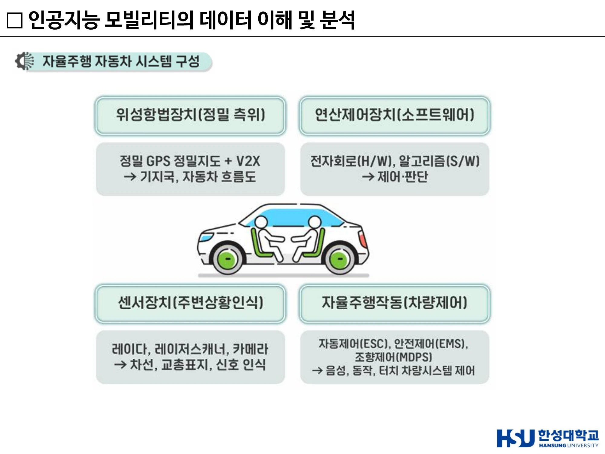
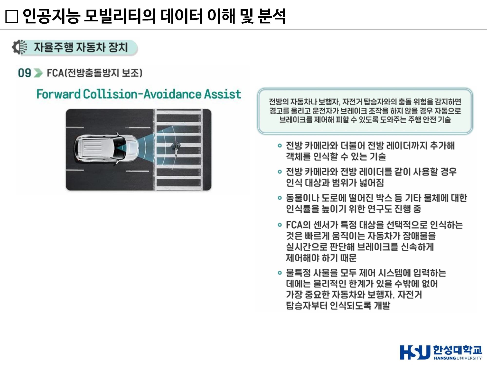
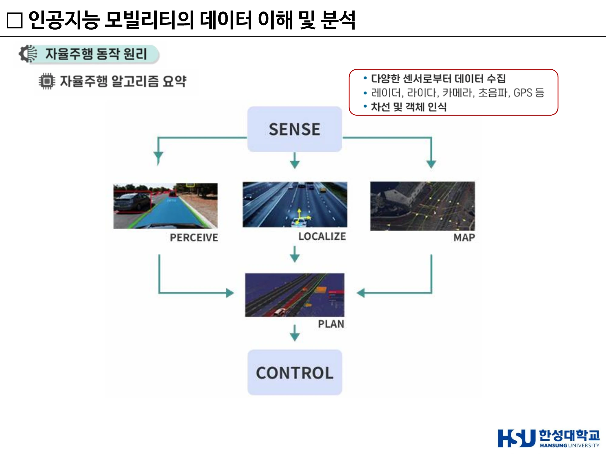
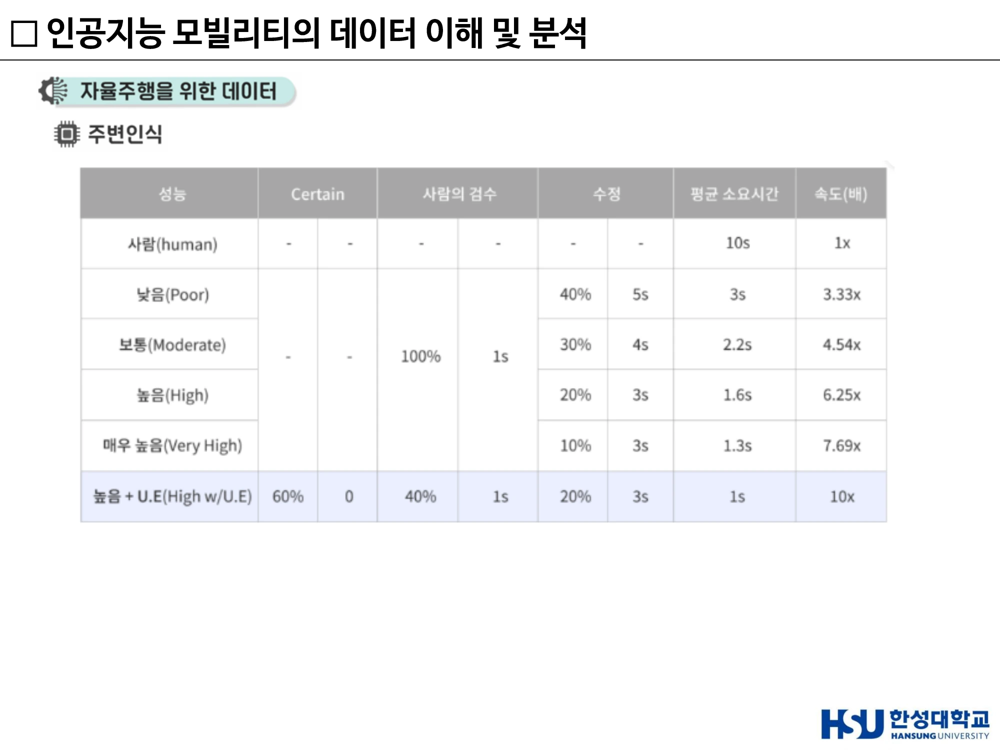

3주차 · 자율주행 시스템과 ADAS¶
🔗 강의 흐름 — 2주차에서 "자율주행시스템"을 법적 정의로 배웠다. 이번 주는 그 시스템의 실제 구성품과 동작 순서를 연다. 여기서 배우는 인지–판단–제어 3단 구조는 중간·기말 서술형에 매년 나온다.
학습목표 — 자율주행자동차의 시스템 4구성을 설명하고, 주요 ADAS 기능의 원리를 구분하며, 자율주행 알고리즘의 SENSE–PLAN–CONTROL 흐름과 각 단계의 기술을 예로 들어 서술할 수 있다.
💡 기초 다지기 — ADAS(첨단 운전자 보조 시스템)는 자율주행의 "부품 창고"다. 자동 긴급제동, 크루즈 컨트롤, 차선 유지… 이런 기능들을 하나씩 만들다 보니 그 조합이 곧 레벨 2 자율주행이 되었다. 그래서 "자율주행의 급속한 발전은 ADAS 발전 덕분"이라고 말한다.
🗺️ 한눈에 보는 개념도¶
flowchart LR
SENSE["SENSE<br/>센서 데이터 수집"] --> P["PERCEIVE<br/>차선·객체 인식"]
SENSE --> L["LOCALIZE<br/>현재 위치 파악"]
SENSE --> M["MAP<br/>정밀 지도"]
P --> PLAN["PLAN (판단)<br/>주행 경로·전략 결정"]
L --> PLAN
M --> PLAN
PLAN --> CTRL["CONTROL (제어)<br/>조향·제동·가속"]
CTRL -.피드백.-> SENSE1. 자율주행자동차 시스템 4구성¶
| 구성 | 역할 | 세부 |
|---|---|---|
| 위성항법장치 | 정밀 측위 | 정밀 GPS + 정밀지도 + V2X → 기지국, 자동차 흐름도 |
| 센서장치 | 주변상황 인식 | 레이다, 레이저스캐너(라이다), 카메라 → 차선·교통표지·신호 인식 |
| 연산제어장치 | 제어·판단 | 전자회로(H/W) + 알고리즘(S/W) |
| 자율주행작동 | 차량제어 | 자동제어(ESC), 안전제어(EMS), 조향제어(MDPS) → 음성·동작·터치 차량시스템 제어 |
시험 포인트
"다음 중 자율주행자동차의 주요 시스템에 해당하지 않는 것은?" → ① 위성항법 장치 ② 라이다/레이더·카메라 입력장치 ③ 센서장치 ④ 자율주행작동장치 ⑤ 연산제어 장치 형태로 출제된다. 위 4구성 명칭을 정확히 숙지한다.
우버(Uber) 자율주행차 구성 예시
- 카메라 — 병렬 연결된 다수의 카메라로 주변 사물·빛·신호·사람 인식
- 라이다(LIDAR) — 레이저빔으로 주변환경을 3D로 인식하는 자율주행차의 핵심장치
- 추가 레이더 센서
- 메인 컴퓨터 — 주로 트렁크에 위치, 탐지 정보를 입력된 지도 위치정보와 비교하여 현재 상태를 판단

▲ 자율주행 자동차 시스템 구성 — 위성항법장치 / 연산제어장치 / 센서장치 / 자율주행작동(차량제어) (출처: 3주차 슬라이드 p4)
2. ADAS 주요 기능 11종¶
| # | 기능 | 원리 |
|---|---|---|
| 01 | 자동 긴급제동(AEB) | 전면 센서(레이더·라이다·카메라)로 장애물 거리 측정 → 주행 속도 계산 → 추돌 위험/불가피 판단 시 경고와 함께 강하게 브레이크 작동 |
| 02 | 크루즈 컨트롤(ACC) | 설정 속도에 맞춰 앞차와의 거리를 스스로 유지. 반자율주행에 필요한 가장 기초적인 기술. 전방 센서로 거리 계산 → 가속페달·브레이크 자동 제어 |
| 03 | 보행자/차량 검출 | AI 기반 검출 |
| 04 | 차선이탈 경고 / 보조 | 방향지시등을 켜지 않은 상황에서 차선을 밟으면 운전자의 실수로 판단 → 소리·진동 경고, 또는 운전대 조작·반대쪽 바퀴 제동으로 차선 유지 |
| 05 | 차선 인식 | 카메라 기반, 곡률 반경·차로 중앙 대비 오프셋 산출 |
| 06 | 상향등 보조 | 전방 카메라로 앞차·마주오는 차·가로등(주변 광원)을 파악해 상향등 자동 점등/소등 |
| 07 | 불빛 검출 | 야간 광원 분리 인식 |
| 08 | 속도제한 보조 | 카메라 + 내비게이션 제한속도 정보 → 초과 시 감속할 때까지 경고 |
| 09 | FCA (Forward Collision-Avoidance Assist, 전방충돌방지 보조) | 전방 카메라 + 전방 레이더를 함께 사용해 인식 대상과 범위를 넓힘. 빠르게 움직이는 자동차가 장애물을 실시간 판단해 브레이크를 신속 제어해야 하므로 선택적 인식이 필요 → 가장 중요한 자동차·보행자·자전거 탑승자부터 인식하도록 개발 |
| 10 | FCA-JT (Junction Turning) | 교차로 좌회전 시 마주 오는 차량과의 예기치 못한 충돌을 막는 기능 |
| 11 | LKA / LFA | 아래 별도 정리 |
LKA vs LFA — 자주 헷갈리는 한 쌍¶
| 구분 | 정의 | 작동 특성 |
|---|---|---|
| LKA (Lane Keeping Assist, 차로 이탈방지 보조) | 차가 차로를 벗어날 것 같은 순간 조향을 보조 | 이탈 임박 시에만 개입 |
| LFA (Lane Following Assist, 차로 유지 보조) | 차가 차로 중앙을 유지하며 주행하도록 하는 기술 | 차로 중앙에서 30cm만 벗어나도 작동 → 사실상 상시 작동 상태 |
→ LFA가 LKA보다 훨씬 넓은 제어 범위를 갖는다.
ADAS 서술 시 주의¶
시험 포인트 — ADAS 오답 보기
- ✅ 자율주행 시스템을 더욱 견고하게 만드는 데 기여했다
- ✅ 테슬라는 오토파일럿 기능을 통해 상용차에 ADAS를 탑재했다
- ✅ ADAS는 카메라·레이더·라이다 등 다양한 센서를 융합하는 시스템이다
- ✅ 카네기멜런대 Navlab 프로젝트가 ADAS 기술 발전에 영향을 주었다
- ❌ (2025년 오답) "ADAS는 자율주행에서 처음으로 카메라·초음파·레이더 스캐너를 동시에 사용한 시스템이다"

▲ FCA(전방충돌방지 보조) — 카메라와 레이더를 함께 써 인식 대상·범위를 넓히고, 자동차·보행자·자전거를 우선 인식하도록 설계한다 (출처: 3주차 슬라이드 p13)
3. 자율주행 알고리즘 — SENSE → PLAN → CONTROL¶
① SENSE (인지)¶
- 다양한 센서로부터 데이터 수집 — 레이더, 라이다, 카메라, 초음파, GPS 등
- 차선 및 객체 인식
② 판단 (PERCEIVE · LOCALIZE · MAP → PLAN)¶
| 요소 | 역할 |
|---|---|
| Map | 정밀 지도 정보 |
| Perceive | 주행 중 모든 정보를 확인 (차선, 장애물 등) |
| Localization | 지도 정보 및 센서 값을 이용하여 정확한 현재 위치 파악 |
| Plan | 차량 주행 경로 생성 — 주행 경로 및 주행 전략 결정 |
③ CONTROL (제어)¶
- 차량 움직임 제어
- 기본 제어 — 조향, 제동, 가속 / 샤시 제어
- 종방향 / 횡방향 제어
- 휴먼 팩터 고려
시험 포인트 — 매년 나오는 함정
"자율주행 알고리즘의 인지–판단–제어 구조 중 제어 단계에서 수행하지 않는 일은?" → ① 제동 ② 가속 ③ 위치 ④ 조향 → 정답은 ③ 위치. 위치(Localization)는 판단 단계의 일이다. 제어는 조향·제동·가속만 한다.
서술형 2번 단골: "자율주행 기술의 인지–판단–제어 구조에 대해 간단히 설명하고, 각 단계에서 적용되는 주요 기술을 예를 들어 서술하시오." 예시 답안 뼈대 — 인지 = 센서/카메라 / 판단 = AI 알고리즘 / 제어 = 액추에이터 제어

▲ 자율주행 알고리즘 요약 — SENSE → PERCEIVE·LOCALIZE·MAP → PLAN → CONTROL (출처: 3주차 슬라이드 p17)
4. 자율주행을 위한 데이터¶
"자율주행의 기반기술은 인공지능, 인공지능의 학습방법은 빅데이터"
자동차 사물인식이 답해야 하는 두 질문:
- 물체와 자동차 간 거리는 얼마나 멀리 떨어져 있는가?
- 어떤 물체인가?
→ Object Detection 분야에서 인공지능 알고리즘을 이용한다. 자동차 주변에 어떤 물체가 있는지 파악하고, 정보들을 종합하여 다시 한 번 인공지능 기술로 작동방식을 결정한다. 주변 이미지 기반 운행작업 결정에는 인식에 썼던 것과는 별개의 인공지능을 새로 개발할 가능성이 높다.
오토라벨링 (Auto-Labeling)¶
주변사물인식 결과를 순차적으로 받아들여 이를 다시 데이터로 이해하고, 미세한 시간 단위로 계속 진행한다. 이때 오토라벨링은 시간당 50.25개의 이미지 데이터 라벨링이 가능하다.
flowchart LR
RAW["원본 데이터"] -->|라벨링 요청| AI["오토라벨 AI"]
AI -->|모델 예측| L1["1차 라벨링된 데이터"]
L1 -->|검수 요청| H["사람"]
H -->|수정 없음| DONE["라벨링 완료 데이터"]
H -->|수정| FIX["수정 완료 데이터"]
FIX -->|훈련| AI
FIX --> DONE라벨 오류 4유형 — 수정 비용이 다르다¶
| 유형 | 내용 | 수정 시간 |
|---|---|---|
| 1. Classification Error | Object Class를 잘못 지정 (고양이인데 개로 표기) — 클래스만 살짝 수정 | 약 2초 |
| 2. Low Precision (False Positives) | 정밀도가 낮아 라벨링하지 않아도 될 것에 라벨을 다는 경우 (산의 윗부분을 지붕으로 인식) — 해당 라벨 삭제 | 약 2초 |
| 3. Low Recall (False Negatives) | 재현율이 낮아 Object를 발견조차 못함 (사람을 아예 놓침) — 검수자가 직접 바운딩 박스를 그리고 라벨을 달아야 함 | 약 10초 |
| 4. Low IoU | 라벨링 결과가 Object 모양에 딱 맞지 않음 — 위치·형태 조정 필요 | 약 10초 |
성능별 라벨링 속도 비교
| 성능 | 사람의 검수 | 수정 비율 | 평균 소요시간 | 속도 |
|---|---|---|---|---|
| 사람(human) | — | — | 10s | 1x |
| 낮음(Poor) | 100% (1s) | 40% (5s) | 3s | 3.33x |
| 보통(Moderate) | 100% (1s) | 30% (4s) | 2.2s | 4.54x |
| 높음(High) | 100% (1s) | 20% (3s) | 1.6s | 6.25x |
| 매우 높음(Very High) | 100% (1s) | 10% (3s) | 1.3s | 7.69x |
| 높음 + U.E | Certain 60% / 검수 40% (1s) | 20% (3s) | 1s | 10x |
U.E = User Evaluation(사용자 검수/편집). 모델이 "확신(Certain)"하는 60%는 사람이 아예 보지 않고 넘김으로써 10배 속도를 달성한다.
시험 포인트 — 성격이 다른 하나
Corner Case mining · Data Augmentation · Active Learning은 데이터 품질·학습 파이프라인에 속하고, NMS(Non-Maximum Suppression)는 추론 단계의 후처리다. (2026 중간 13번)

▲ 오토라벨링 성능별 검수 속도 — 사람 10s/1x 대비 High+U.E는 1s/10x (출처: 3주차 슬라이드 p26)
5. CNN 개요¶
CNN(Convolutional Neural Network) — 이미지나 영상 데이터를 직접 학습하여 패턴을 인식·분류하는 딥러닝 알고리즘. 수십~수백 개의 계층을 가질 수 있으며, 각 계층은 영상의 서로 다른 특징을 검출한다.
| 단계 | 역할 |
|---|---|
| Input | 이미지 또는 센서 데이터 입력 |
| Convolution | 필터(kernel)로 특징 추출 — edge, texture, pattern |
| ReLU | 음수 제거 → 비선형성 추가, 학습 성능 향상 |
| Pooling | 데이터 크기 축소(Downsampling). 연산량 감소, 과적합 방지, 위치 변화 강건성 |
| 반복 | Conv+ReLU+Pooling 반복 → 저수준(선) → 중간(모서리) → 고수준(물체 형태) |
| Flatten | 2D → 1D 벡터 |
| Fully Connected | 일반 신경망처럼 판단 |
| Softmax | 최종 분류 결과 출력 (자동차/트럭/자전거…) |
시험 포인트 — CNN 오답 보기
- ✅ CNN의 구성 요소는 객체 인식뿐 아니라 객체의 위치 정보도 제공할 수 있다
- ✅ 위치 정보는 물체 중심 좌표(x, y)와 너비·높이로 구성된다
- ❌ "CNN은 항상 Softmax를 사용해야만 객체 인식을 수행할 수 있다" → 틀림
- ❌ "객체 탐지 모델을 활용하면 CCTV 영상에서 음성인식 시스템을 구현할 수 있다" → 틀림
- ❌ "Canny 알고리즘은 각 경계 상자 내부에서 예측 클래스를 분류하는 방법" → 틀림. Canny는 에지(Edge) 검출 방법이며 객체 분류에는 쓰지 않는다
참고 — MFCC(Mel-Frequency Cepstral Coefficients): 사람의 귀(청각 특성)를 반영해 소리를 수치화한 특징. Mel-Frequency(사람이 느끼는 주파수 스케일) + Cepstral(스펙트럼을 다시 변환) + Coefficients(최종 특징 벡터). 영상 외 음향 데이터에도 같은 CNN 구조를 적용할 수 있음을 보이는 사례다.
🤔 생각해 봅시다¶
- 라벨 오류 4유형 중 Low Recall이 가장 비싼 이유는 무엇인가? 자율주행 안전 관점에서 4유형 중 가장 위험한 유형은 무엇인가?
- FCA가 "모든 물체"가 아니라 자동차·보행자·자전거부터 인식하도록 개발된 이유는 무엇이며, 이는 어떤 한계를 낳는가?
- 오토라벨링의 "Certain 60%는 사람이 보지 않는다"는 선택은 안전한가? 어떤 조건이 갖춰져야 정당화되는가?
✅ 이번 주 체크리스트¶
- 자율주행 시스템 4구성을 명칭 그대로 말할 수 있다
- LKA와 LFA의 차이(30cm·상시작동)를 설명할 수 있다
- SENSE–PERCEIVE/LOCALIZE/MAP–PLAN–CONTROL 순서를 그릴 수 있다
- 제어 단계에 "위치"가 포함되지 않는다는 것을 안다
- 라벨 오류 4유형과 각 수정 시간(2s/2s/10s/10s)을 안다
▶️ 다음 주 예고 — 인지 단계의 핵심 기술인 객체탐지를 파고든다. YOLO와 R-CNN은 무엇이 다른가, IoU·NMS는 왜 필요한가, 그리고 그 위에서 굴러가는 로보택시 산업은 지금 어디까지 왔는가. → 4주차